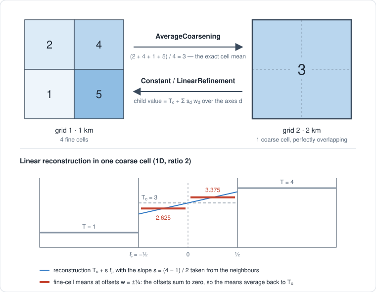

Dyadic regridding
Concept
Coupled Kryos modules often run at different resolutions — an ice sheet at 1 km, isostasy at 2 km, a surface model at 4 km — and exchange fields every time step. KryosTools moves fields between such grids conservatively, without allocating temporaries, on CPUs and GPUs.
It relies on the grids being dyadic:
- each grid is regular and isotropic (
dx == dy), described by aDyadicGridbuilt from the cell-centre coordinates a module already has; - two grids are paired when their spacings differ by a power of 2 and their corners coincide.
Every coarse cell then contains a whole number of fine cells with perfect overlap, as in the sketch below: nothing needs to be interpolated between arbitrary points, and no weights or index lists need to be stored. Note that "all resolutions are multiples of 500 m" is not enough — 1.5 km and 2 km cells do not nest.

The two directions are not symmetric.
- Coarsening (
AverageCoarsening) assigns each coarse cell the mean of the fine cells it contains. This is the exact cell integral, so there is nothing to choose. An optional weight — typically the true cell area on a distorted projection, or a mask — turns it into a weighted mean that conservesΣ wᵢxᵢ. - Refinement has to reconstruct sub-cell detail, which is a modelling choice.
ConstantRefinementcopies the coarse value into every fine cell.LinearRefinementreconstructsT_c + Σ_d s_d ξ_dwithin each coarse cell, with slopess_dfrom the neighbouring cells, and gives each fine cell the mean of that reconstruction.
Refinement is conservative whatever the slopes are. The offset of child j of r from its parent's centre is w_j = (2j − 1 − r) / 2r, and these offsets sum to zero. The fine values therefore always average back to T_c, as the lower part of the sketch shows. Coarsening a refined field returns the original exactly. A slope limiter (MinModLimiter) can hence bound overshoot — for instance to avoid negative thickness next to an ice margin — without affecting conservation, although it makes the operator non-linear.
In the outermost coarse cells the neighbour needed for a centred slope is missing, so the slope along that axis is zero there and LinearRefinement falls back to copying.
When two modules share a grid, IdentityRegridding makes the exchange a plain copy.
A coupler usually needs both directions between two grids, which is what BidirectionalRegridding provides. It picks the right one-way regridder for each direction from the grids, and chooses the direction of each call from the sizes of the two fields.
AbstractRegridding
├── AbstractCoarsening
│ └── AverageCoarsening
├── AbstractRefinement
│ ├── ConstantRefinement
│ └── LinearRefinement
├── IdentityRegridding
└── BidirectionalRegriddingA few practical points:
- Regridders are built once, at setup. Their concrete types depend on the grids, so store them in parametric fields;
regrid!itself is type-stable and does not allocate memory proportional to the fields. KernelAbstractions adds a small constant overhead per call on the CPU. - One regridder serves fields of any floating-point type.
Float16fields are accumulated inFloat32. - On GPUs,
regrid!is asynchronous like any KernelAbstractions kernel. GPU and CPU results agree to rounding: the GPU compiler may fuse multiply-add operations.
Example
Two grids covering the same 8 km × 8 km domain, at 1 km and 2 km:
julia> using KryosTools
julia> x1 = 500.0:1000.0:7500.0; # cell centres at 1 km
julia> x2 = 1000.0:2000.0:7000.0; # cell centres at 2 km
julia> g1, g2 = DyadicGrid(x1, x1), DyadicGrid(x2, x2);
julia> rgd = BidirectionalRegridding(g1, g2)
BidirectionalRegridding(8×8 ↔ 4×4: to1 = LinearRefinement, to2 = AverageCoarsening)Refine a field from grid 2 onto grid 1. Along each axis, the interior coarse cells get linear profiles, while the outermost ones are copied:
julia> h2 = [100.0 * i for i in 1:4, j in 1:4];
julia> h1 = zeros(8, 8);
julia> regrid!(h1, h2, rgd);
julia> h1[:, 1]
8-element Vector{Float64}:
100.0
100.0
175.0
225.0
275.0
325.0
400.0
400.0The refinement is conservative, and coarsening it back returns the original field:
julia> sum(h1) == 4 * sum(h2)
true
julia> regrid(h1, rgd) == h2
true